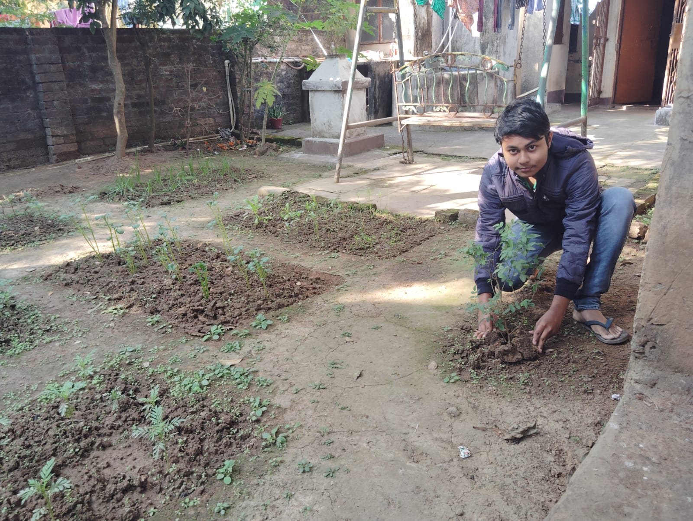
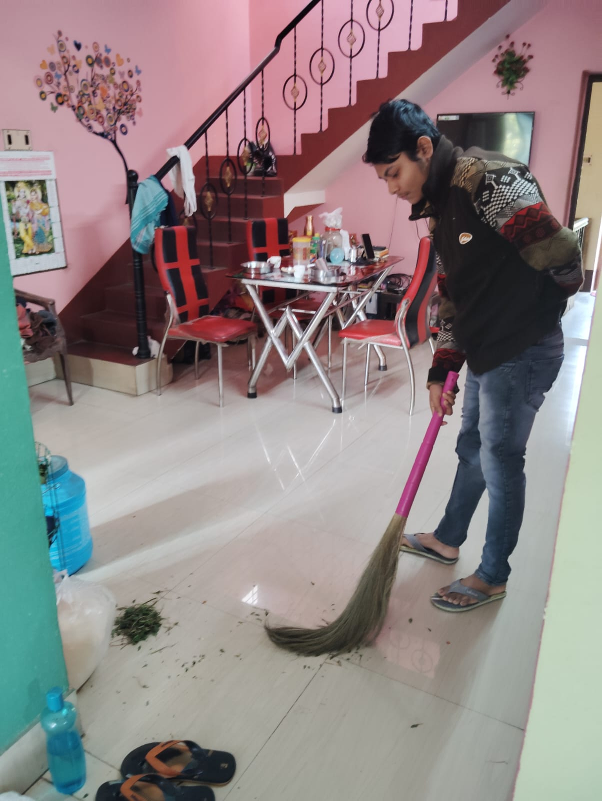

About me!!!
- Name: Aditya Karmakar
- Gender: Male
- Age: 19
- Type: Human
Hobbies
It is common knowledge that all humans have hobbies. My hobbies are as follows:
- Bgmi
- Listening to music
Character
I have been very vulnerable so far, sharing facts about myself which are near & dear to me!!! Continuing on with this spirit, I will share with you, what I believe are my strengths and weaknesses as a fellow human.
- Efficient I try to be efficient when it comes to everything, optimising even the everyday aspects of life. I never sleep more than 4 hours at night becuase I know I can cover the rest in class. I never take off my hoodie and jeans, even when bathing so that I don't have to waste limit resources (pocket money) on laundry. Living life like me!!! may be strange and difficult at first, but this what it takes to be a top performer
- Tough Very much so. Proof attached below:
- Lifting Although it may not be obvious to all, I am not good at lifting objects. Even the light ones. However I am working on it. Proof attached below:
- Giving up I spent about 10 seconds thinking about what should be written in support of this claim, but I think it's time to give up.
Future
Any fellow human would be anxious about the future when it comes to a decision as important as choosing one's life partner. So that you do not think too carefully about your future and well-being, I have explained what our life together will be like.
Work life balance
You will be the bread-winner of the relationship, going to work daily and giving us both a good life. I will be the house-husband
 Optimal money management
We will be swimming in overflowing paychecks earned from your hard work when combined with my money management. Here's my 2-step full-proof plan:
- No insurances Paying for a pessimistic future which may or may not ever come true is unwise. We will put a stop to this monthly bleeding of money.
- Only EMI Consider this: you buy a pack of biscuits every day, let's say the price is ₹10. We will be paying a total of 30 * 10 = ₹300 that month. If we instead accept an EMI scheme of payment in monthly installments, say, of ₹9 over the course of 3 months for each biscuit, we will be paying a total of 30 * 9 = ₹270 that month. For expenses on a large scale, it is like earning 110% of your original salary.